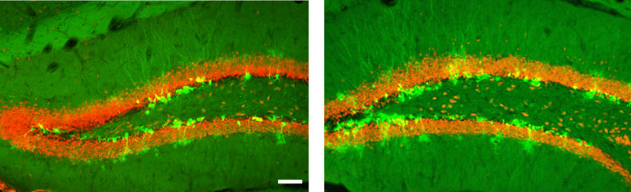

Neurología. Científicos en la Universidad de Columbia y el Instituto Nacional de Salud en Estados Unidos han conseguido estimular la producción de neuronas recién nacidas en el hipocampo de roedores mediante la ingeniería genética.
En manos del neurólogo moderno, las ideas del superhombre de Nietzsche toman una nueva dimensión. Por el momento, conozcamos a los superratones. Estudios recientes sobre la neurogénesis (formación de nuevas neuronas) en roedores traen resultados asombrosos. Ratones adultos diseñados para tener más neuronas recién nacidas en el hipocampo, conocido por su función en la producción de memorias, entre otras, realizaron un papel excelente a la hora de discriminar entre dos experiencias similares, una habilidad que decae con la edad. No sólo eso, los investigadores del Instituto Nacional de la Salud (NIMH) y la Universidad de Columbia en Nueva York afirman que el aumento en la producción de estas nuevas neuronas, cuando era combinado con ejercicio, tenía efectos similares a los que producen los antidepresivos.
Los científicos nos cuentan cómo han desarrollado esta nueva forma de estimular la producción de neuronas en ratones adultos que no sólo mejora las funciones cognoscitivas sino que también mejora el humor. Pues bien, remontémonos unos años atrás cuando el Sudoku y los juegos para la memoria se pusieron de moda. En ese entonces, los neurólogos estaban estudiando la neurogénesis pero desde otras perspectivas, como el ejercicio y el uso de juegos que reten nuestro cerebro y lo pongan a ejercitar las neuronas. Roedores eran criados en jaulas que no ofrecían ningún tipo de reto cognoscitivo para el animal, opuestos a otros grupos que podían disfrutar de diversos juegos como túneles, ruedas para ejercicio y otros elementos en sus jaulas. Los resultados: los grupos con el medio enriquecido mostraban un aumento en la neurogénesis del hipocampo.
Ahora bien, para diseñar estos ratones que logren producir nuevas neuronas en el hipocampo, los investigadores usaron la ingeniería genética: eliminaron de los genomas de estos ratones un gen que es requerido en la programación de muerte celular (apoptosis) de, específicamente, estas neuronas recién nacidas en el hipocampo.
“Creamos ratones que carecían de un gen que normalmente mata de 50 a un 80% de las neuronas recién nacidas en el hipocampo adulto. Estos ratones eran campeones discriminando y explorando”, explica el director del NIMH, Thomas R. Insel.
Los investigadores, tanto en el NIMH como en Columbia, explican que la estrategia genética usada para estimular la neurogénesis puede imitarse farmacológicamente. “Esto nos regala el potencial para desarrollar drogas que puedan revertir el déficit en problemas en la separación de patrones”, dice René Hen, profesora de neurociencia y farmacología en la universidad neoyorquina.
La separación de patrones es un fenómeno importante en el aprendizaje; se trata de la habilidad de distinguir entre lugares, eventos y experiencias similares. “Este proceso es esencial para el aprendizaje porque nos permite conocer si estamos atravesando por una situación nueva o familiar; si es familiar, te mueves a investigar los datos próximos; si es nueva necesitas reconocer que es nueva y darle sentido. Estos ratones, sin ningún otro cambio en sus cerebros más que las nuevas neuronas, aprendieron mejor las tareas donde tenían que discriminar entre contextos similares”, explica Hen.
Alzheimer, problemas de ansiedad y fobias
Las personas con problemas de ansiedad, fobias y síndrome de efecto postraumático tienen dificultad separando patrones. También los pacientes con Alzheimer y problemas de aprendizaje podrían beneficiarse con este tipo de estimulación de la neurogénesis. Por supuesto, todos estos métodos son incluyentes; ejercitar el cerebro y el cuerpo es siempre una buena idea. “La idea es continuar investigando, debemos conocer mucho mejor el déficit en separación de patrones y sus características. Debemos entender si están siempre conjugados con las emociones o si ocurren sin ellas”.
Más aún, los investigadores también descubrieron que esta estimulación produce otro efecto en el animal: mejora su humor. En estudios anteriores, Hen y colegas habían mostrado que el nacimiento de nuevas neuronas en el hipocampo era necesario para los efectos terapéuticos de los medicamentos antidepresivos. El hecho de que se tome semanas para que estas neuronas recién nacidas crezcan y se integren en los circuitos existentes ayudó a explicar por qué los pacientes no sentían mejoría con los medicamentos en seguida. Sin embargo, los científicos explican que cualquier cambio cerebral mejora cuando viene acompañado por cambios en el medio, como el ejercicio, especialmente cuando se trata del humor y los efectos antidepresivos.
El costo de la ciencia para la humanidad
Los seres humanos somos una especie curiosa, conformada por un sinnúmero de contradicciones que se desprenden de una evolución rápida del órgano de los pensamientos lo que nos ha impulsado por un camino de descubrimiento, pero también de olvido. Hemos descubierto enormes cosas sobre el mundo, pero nos hemos olvidado de cuidar a la mayoría de la especie (y de otras también). Esa es una enorme contradicción en una especie que, en teoría, piensa que el bienestar de la humanidad debe ser prioridad.
En fin, que estamos inmersos en un gigantesco experimento científico donde toda la vida en el planeta participa. Los avances unas veces perjudican más de lo que benefician, otras veces no. No obstante, cuando progresamos, igual sólo una parte minoritaria del planeta llega a conocer sobre esos importantes pasos. Aún con el Internet, el progreso científico de punta continúa aislado, interesando y afectando la vida de unos pocos. Por ello la importancia de abaratar los gastos científicos para que toda la humanidad progrese con ellos.
Este descubrimiento, sin embargo, refuerza un concepto significativo: la importancia de ejercitarnos. Y eso es algo que podemos hacer, si nos esforzamos, sin gastar dinero. Así que a mover el cuerpo y a mantener las neuronas entretenidas pensando y esperar que algún día los científicos conozcan con precisión los mecanismos que nos hacen y nos regalen opciones asequibles para encontrar nuestro bienestar.

En la imagen: Los puntos verdes fosforescentes alrededor de las áreas naranja son las neuronas recién nacidas. El hipocampo del ratón diseñado genéticamente para impulsar la neurogénesis es el de la derecha, a la izquierda, el hipocampo del grupo control.
Volver a Noticias
Comentarios
Comments powered by Disqus